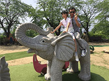
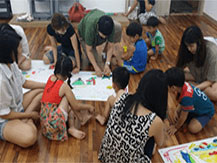
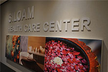
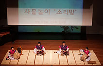

법인소개
Share Our Vision / Share Our Love
우리는 부르심을 받았습니다
설립자
김선태 목사님 (현 의료법인 실로암안과병원 병원장, 실로암시각장애인복지회 이사장)
운영법인
사회복지법인 대한예수교장로회 실로암시각장애인복지회
법인 미션
'실로암'은 '보냄을 받은 자, 보냄을 받다'라는 뜻입니다. 실로암시각장애인복지회는 이러한 소명을 갖고 세워진 시각장애인을 위한 기관입니다. 우리 기관은 "요람에서 무덤까지"라는 복지 슬로건을 두고 시각장애인의 전인적 복지를 추구합니다. 시각장애인 아동의 학습 및 정서지원에서부터 노인의 여가생활, 요양시설에 이르기까지 시각장애인의 교육, 직업, 여가, 도서제작 및 보급, 학습 지원, 정보화장비 지원, 재활정보 제공, 지역사회복지 등 시각장애인의 재활과 자립을 위한 다양한 사업을 실시하고 있습니다. 또한, 이러한 사업들이 바르고 효율적으로 이뤄질 수 있도록 실로암시각장애인복지회 직원들은 '보냄 받은 자'라는 사명을 마음에 새기며 각자의 영역에서 최선을 다하고 있습니다.
법인 비전
- 시각장애인 당사자가 중심이 되는 복지관 구축
- 시각장애인의 자립을 목적으로 하는 서비스의 선택과 집중
- 전 국민이 함께하는 시각장애인 복지문화 정착
- 전세계 시각장애인을 위한 복지서비스 제공
- 전세계 시각장애인 복지의 모델 제시
- 앞서가는 복지행정체계 구축
사업현황
-
국내사업
국내 시각장애인의 삶을 위해더보기국내 시각장애인들의 재활과 자립을 위해 다양한 사업을 진행하고 있습니다.
중도실명으로 적응이 힘든 분들을 위한 중도실명인지원사업, 시각장애인의 생활 및 여가활동을 위한 지역사회지원사업, 문화체육지원사업을 진행하고 있습니다.
또한, 학습권 보장을 위해 대체도서 제작 및 보급사업, 정보습득을 돕는 재활정보제공사업, 정보화기술지원사업 등을 실시하고 있습니다. -
해외사업: 국제 장애인지원센터
전 세계 장애인에게 빛으로더보기실로암시각장애인복지관은 2015년 6월 서울시의 지원으로 국제장애인지원센터를 개소, 국내 시각장애인들의 복지와 자립을 위해 애써 온 지난 경험을 바탕으로 도움이 절실한 개발도상국 장애인들을 지원하는 국제지원사업을 시작하였습니다.
2016년 국제지원사업 대상 국가는 총 7개국으로 우즈베키스탄, 키르기스스탄, 라오스, 몽골, 스리랑카, 베트남, 필리핀입니다.
국제지원사업은 해당 국가의 특성에 따라 직업재활사업, 의료지원사업, 장애인이동권지원사업, 교육지원사업, 정보화지원사업, 점자교과서제작사업을 진행하고 있습니다. -
설리번 학습지원센터
제2의 헬렌켈러를 위해더보기설리번 학습지원센터는 헬렌켈러를 가르친 설리번 선생의 정신을 이어받아 시각장애 뿐만 아니라 청각장애, 지적장애, 발달장애, 뇌병변장애 등을 수반한 시각장애인에게 유아기에서 성인기의 발달 연령에 필요한 교육재활사업을 실시합니다.
설리번 학습지원센터에서는 유아아동지원사업, 청소년지원사업, 시각중복장애성인지원사업, 가족지원사업, 음악교육지원사업, 한국학생점자도서관사업 등 진심을 담은 전인교육을 통해 시각장애인들이 장애를 극복하고 건강한 사회구성으로 자리 잡을 수 있도록 최선의 노력을 다하고 있습니다.- 
- 
-
실로암 카페모아
따뜻한 커피향으로더보기실로암카페모아는 시각장애인바리스타가 운영하는 세계 최초의 커피전문점으로 직업적으로 소외된 여성시각장애인들에게 바리스타라는 일자리는 제공해 직업생활을 통한 사회참여와 사회통합의 기회를 제공하고 있습니다.지점안내
- 본점 (봉천점)
- 주소 : 서울시 관악구 남부순환로 1717 실로암시각장애인복지관 1층
- 문의 : 02-880-0888
- 가산점
- 주소 : 서울시 금천구 가산동 60-73 벽산디지털밸리 5차 108호
- 문의 : 02-2082-5580
- 관악구청점
- 주소 : 서울시 관악구 봉천동 1570-1 관악구청 1층
- 문의 : 02-877-3442
- 서울여성플라자점
- 주소 : 서울시 동작구 여의대방로54길 18 서울여성플라자 1층
- 문의 : 02-812-1888
- 실로암안과병원점
- 주소 : 서울시 강서구 등촌2동 512-5 실로암안과병원 1층
- 문의 : 02-2061-0883
-
실로암 안마센터
굳어진 몸을 풀어줌으로더보기실로암 안마센터는 시각장애인들에게 안정적인 일자리를 제공해 경제활동을 통한 자립을 돕습니다.
또한, 남녀노소 누구나 쉽게 다가갈 수 있는 안마센터로 지역사회에 건전한 안마문화를 형성하며 국민의 건강진흥에 이바지하고 있습니다.
특히 실로암 안마센터는 국가공인 안마사 자격증을 가진 시각장애인 전문안마사들이 운영하여 고품격 안마 서비스를 이용하실 수 있습니다.지점안내
- 봉천점
- 주소 : 서울시 관악구 남부순환로 1717 실로암시각장애인복지관 신관
- 문의 : 02-880-0729
- 잠실점
- 주소 : 서울시 송파구 올림픽로 269 롯데캐슬프라자 8층 811호
- 문의 : 02-6415-1000
- 
-
실로암 인더스트리
빛을 볼 수 없는 어둠이 만드는 희망으로더보기실로암 인더스트리는 실로암시각장애인복지회의 중증장애인 생산품 생산시설로서 2015년에 세계 최초의 시각장애인 LED조명 제조공장을 설립하였습니다.
시각장애인의 특성에 적합한 최첨단 LED조명 자동화생산설비를 구축하여, 최근 조명시장 트렌드에 적합한 LED조명등을 생산·판매하고 있습니다.
이를 통해 시각장애인들의 일자리를 제공할 뿐 아니라 제조업에 진출할 기회를 확보하였습니다.
LED조명 제품으로는 실내등(샤인 LED튜브, 샤인 LED다운라이트), 실외등(LED터널등, LED가로등, LED보안)등이 있습니다.
본 제품은 KS 인증 및 고효율 인증을 받았으며 동일한 제품군과의 경쟁에서도 우위를 차지할 만큼 뛰어난 품질을 자랑합니다.
또한, 실로암 인더스트리는 조달청 나라장터의 입찰 참가 자격을 갖추어 앞으로는 관공서 등 각 수요기관으로도 유통될 예정입니다. -
관현맹인전통예술단
보이지 않는 국악인들의 소리로더보기600년 전 시각장애인 악사들에게 관직과 녹봉을 주고 궁중악사로 연주하게 했던 ‘관현맹인’제도는 세종대왕의 애민정신이 반영된 것입니다.
세월과 함께 잊힌 ‘관현맹인’의 전통을 재현하고자, 실로암시각장애인복지관은 2011년 3월 문화체육관광부의 지원을 받아 관현맹인전통예술단을 창단했습니다.
관현맹인전통예술단은 시각장애인 연주자에게 전문음악인으로 활동할 수 있는 안정적인 일자리를 제공하고, 다양한 국내외 공연을 통해 우리 전통문화의 우수성과 시각장애인의 뛰어난 예술성을 알리기 위해 노력하고 있습니다. (☎ 공연 문의: 관현맹인팀 02-880-0690~5)- 
-
효명장학사업
시각장애인 리더 양성을 위해더보기시각장애인 학생들이 장애를 뛰어 넘어 차세대 리더로 성장할 수 있도록 성적이 우수하고 품성이 바른 시각장애인 대학생들을 대상으로 효명장학사업을 실시하고 있습니다. 1981년부터 진행된 장학사업을 통해 2016년 하반기까지 총 210명의 대학생들에게 약 7억 4천만원 상당의 장학금이 전달되었습니다.
또한, 효명장학생 간의 자조모임인 ‘효명리더스클럽’을 운영해 리더십 실천계획을 세워나갈 수 있는 장을 마련하는 등 효명 장학생들이 다양한 영역에서 활동할 수 있도록 지원하고 있습니다.(☎ 문의: 고용지원센터 02-880-0850~4)